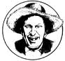

The humorous story is told gravely; the teller does his best to conceal the fact that he even dimly suspects that there is anything funny about it.
-Mark Twain
Well sir, as is become my January custom (if you don't believe me, check this column in issues 73, 79, and 85), I'm going to share a few tales told by professional raconteurs at the annual three-day festival of the National Association for the Preservation and Perpetuation of Storytelling. Now, I beg you to realize that the little black letters all squeezed together on this page in no way compare to the beauty and power of hearing these tales in person. I'd like to ask you to read these out loud right now (go on, don't be shy!) and then try 'em out on a friend or two ... so you can begin to get the right effect.
The first story was told by Waddie Mitchell of Elko, Nevada. Sporting a string tie, wide-brimmed hat, and an even wider handlebar mustache (what looked sorta like facial cowhorns), Waddie kept up the honored tradition of cowboy versifiers with such sagas as this little poem.
"What is reincarnation?" a cowboy ask'd his friend.
"Well, it starts," his old pal tells him, "when your life come to an end.
They wash vour neck an' comb your hair an' clean your fingernails,
Then they sticks you in a padded box, away from life's travails.
Now the box an' you goes in a hole that's been dug in the ground,
And reincarnation starts, my friend, when they plant you 'neath that mound.
The clods melts down, as does the box, an' you who are inside,
And that's when you're beginning your transformation ride.
And in a while, the grass will grow upon that render'd mound,
Until some day upon that spot, a lonely flower is found.
And then a horse might wander by an' graze upon that flower
Thet once was you an's now become your vegetative bower.
Well, the flower that the horse done ate, along with his other feed,
Makes bone, an' fat, an' muscle essential to this steed.
But there's a part that he can't use an' so it passes through,
And there it lies upon the ground, this thing that once was you.
And if by chance I happen by an' see this on the ground,
I'll stop awhile an' ponder on this object I have found.
And I'll think about reincarnation, an' life an' death an' such,
And I'll go away concludin' 'Heck, you ain't changed that much!' "
Milbre Burch combined mime, costume, and grace in her choreographed performances. This young woman, from up in Providence, Rhode Island, tickled everyone with her rendition of "The Three Crazy Brothers" (which she first heard from Joe McHugh of West Virginia). This tale really has to be told out loud, 'cause it has hand motions in it. (I'll try to describe 'em to you in parentheses.)
Once there was a girl, and she had three crazy brothers. One night she was alone in the house with them, and she couldn't hear a sound, so she thought she'd better check on them.
She walked up the stairs and down the hall until she came to the door of the first brother's room. She listened and didn't hear a thing, so she pushed that door open- creeeeaaaak - and this is what her brother was doing. (Snatch imaginary objects out of the air and put them in your hand like you were catching and collecting flies.)
She said, "Hayfoot!"-'cause that was his name-she said, "Hayfoot, what on earth are you doing?"
He said, "I'm taking the stars down out of the sky."
"I think you're crazy!" And she slammed that door- whomp!
She went on down the hall until she came to the second brother's room. She listened and she didn't hear a thing, so she pushed that door open- creeeeaaaak -and this is what her second brother was doing. (Lick your thumb, rub it in the palm of your other hand to pick up an imaginary object, and stick the object in the air. Repeat a few times.)
She said, "Strawfoot!"-'cause that was his name-she said, "Strawfoot, what on earth are you doing?"
He said, "I'm putting the stars back up in the sky."
"I think you're crazy!" And she slammed that door- whomp!
She went on down the hall until she came to the third brother's room, listened, and she didn't hear a sound, so she pushed that door open- creeeaaak -and this is what her third brother was doing. (Repeatedly run two fingers, as if they were the legs of a little person, down your outstretched arm.)
He spoke right up: "My brothers are crazy, so I'm getting out of here!"
Last, I'll share a few words from Selma, Alabama's Kathryn Windham, a wise and kindly white-haired lady who's collected so many ghost stories (she even allows that a spook named Jeffrey lives with her) that she ought to be called The Queen of the Graveyard. She's also collected a passelful of old southern superstitions . . . and published most of them in a little book called Count Those Buzzards! Stamp Those Grey Mules!
It has been more than fifty years, so long ago that I have forgotten from whom the knowledge came, that I was first instructed in the lore of buzzards.
"When you see one buzzard sailing along all by himself, you got to watch him until he flaps his wings," I was told. "If you don't see him flap, you'll have bad luck. Real bad luck. It's sure a bad sign when a buzzard won't flap."
The one-buzzard fetish comes from a fortune-telling rhyme about buzzards that goes: "One for sorrow, Two for joy, Three for a letter, And four for a boy, Five for silver, Six for gold, And seven for secrets never been told."
Using that rhyme, it is possible to predict the fortune for the day by counting all the buzzards in sight. But although the promised joy, letter, boy, silver, gold, and secrets were enticing, it was the line about "one for sorrow" that impressed me the most.
I still watch.
I also still stamp grey mules-and grey horses, too, though I know, of course, thai the horses don't honestly qualify-for good luck. Stamping is the act of licking the right thumb, twisting the thumb in the open palm of the left hand, and then striking (stamping) that palm with the right fist.
After years of stamping grey mules, I do it automatically, often without even being aware of what I am doing. It is a soothing, comforting sort of reflex action.
Another thing about grey mules: All girls where I grew up knew that when you stamped and counted one hundred of them, that very night you would dream about the boy you would marry. We also knew that the dream would not come true (no dream will) if we told it before breakfast. This knowledge provided a reassuring escape if the dream involved someone undesirable as a husband.
There were still bottle trees (bushes or small trees with empty bottles pushed down on their branches) glittering in the sunlight in bare, clean-swept yards when I was a child. There're still a few around. If the occupants of the house are asked about their bottle tree, they're likely to explain its presence by saying it "looks pretty, I reckon," though they secretly know the bottle-decorated plant has the more significant purpose of warding off evil.
Some years ago there was a scattering of bottle trees fashioned exclusively of blue Phillips Milk of Magnesia bottles. Those trees had an elegance and a class which today's sorry substitute of blue plastic bleach bottles cannot match.
Those yards with bottle trees often also had frizzled chickens, a rather rare breed of poultry whose feathers always grow backwards, giving them the appearance of having backed into a strong windstorm. Frizzled chickens were prized for their ability to scratch up conjure before it could work its evil spell. There're still a few frizzled chickens here and there-and they may still scratch up conjure.
By looking and by listening, we learned that good luck could be lured and evil could be kept away also by planting a holly bush by the front door, by sprinkling a line of salt (it had to be plain salt, not iodized) around the house, by painting the doors and window frames blue, or by keeping a little fire burning on the hearth day and night, summer and winter. Incidentally, if a spark from that fire-or any fire-popped on you, that was a sign of good luck. It was extremely good luck if you brushed that glowing spark off before it burned you or your clothes.
There was a final drastic step you had to take if after all that you still hadn't gotten rid of all the evil in your house. Right at first dark, you stood out in from of your house with a white cotton rag. (Nothing else would do: no synthetics, no Kleenex, just a white cotton rag.) You waved that rag around your head, and then you ran around your house three times, waving that rag. That got rid of all the evil . . . and made you the talk of the whole area.
But the best luck of all was to see two buzzards or to stamp a grey mule.
It still is.
EDITOR'S NOTE: For more information on the National Association for the Preservation and Perpetuation of Storytelling (including its festival, directory, journal, and recordings), write NAPPS, P.O. Box 112, Jonesborough, TN 37659.
Excerpts from Count Those Buzzards! Stamp Those Grey Mules! (copyright© 1979 by Kathryn Tucker Windham) are reprinted with permission of the author.
|
 |
|
|